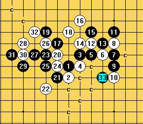

一道黑VCT题
首页
习题专区
#1 一道黑VCT题 作者：千羽鹤 发表时间：2009-4-30 12:57:38
=======上图对应的爱五子棋谱代码如下，以便你拆解：========
h8h7i9i8j9k9l9l10l8l7l11j10k10i10j11i12g10h11f11g9g7f6f9g8f8f10e9d10d8d9c9e11
======================================================
#2 Re:一道黑VCT题 作者：忧郁的双眼 发表时间：2009-4-30 13:25:06
这个题重复了吧？我记得见过！
#3 Re:一道黑VCT题 作者：千羽鹤 发表时间：2009-4-30 13:58:10
是吗，是那天一个朋友让我做的，感觉有难度，所以发上来了，以前没见过
#4 Re:一道黑VCT题 作者：忧郁的双眼 发表时间：2009-4-30 14:33:00
因为看过答案了
所以就不做楼主的题了~
待楼下高手解答吧！
#5 Re:一道黑VCT题 作者：无尽 发表时间：2009-4-30 14:33:12
天狗的
#6 Re:一道黑VCT题 作者：流逝 发表时间：2009-4-30 15:11:34
这个题确实有些难度，我当时算了挺长时间的
#7 Re:一道黑VCT题 作者：慎独 发表时间：2009-4-30 15:41:23

#8 Re:一道黑VCT题 作者：刀学生 发表时间：2009-4-30 16:18:27
=======上图对应的爱五子棋谱代码如下，以便你拆解：========
h8h7i9i8j9k9l9l10l8l7l11j10k10i10j11i12g10h11f11g9g7f6f9g8f8f10e9d10d8d9c9e11k7j6m11k11m10m9m12n13n8k8n9i13j12i11i14h12g13n10g11d12c13d13d11j15h10j8g14g12f12e13h6i5f13
======================================================
#9 Re:一道黑VCT题 作者：千羽鹤 发表时间：2009-4-30 16:32:03
楼上的 我仔细看看，跟我的答案不一样啊
我仔细看看，跟我的答案不一样啊
#10 Re:一道黑VCT题 作者：慎独 发表时间：2009-4-30 16:40:12
 1.rar
1.rar
#11 Re:一道黑VCT题 作者：刀学生 发表时间：2009-4-30 16:50:29
各种必胜 不知道中间是否有非vct攻击